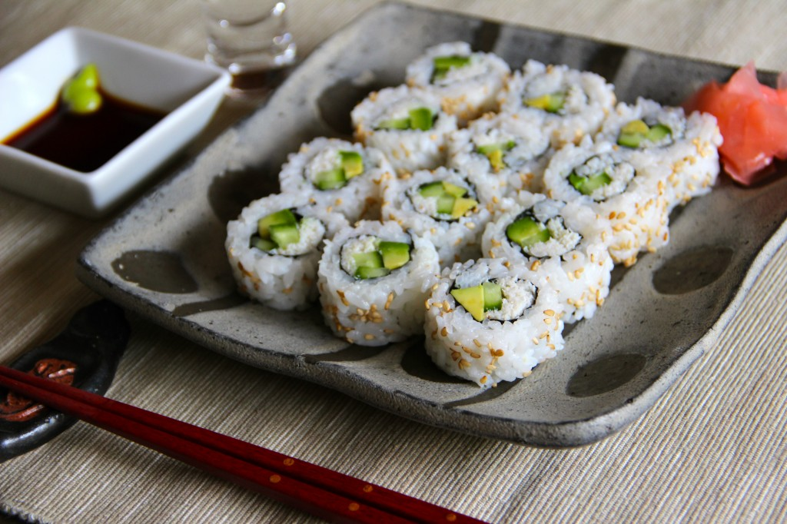

California Roll

Description
Californians' twist of the traditional sushi. What not to like about
avocado, crab and cucumber in your roll! Simple but delicious!
Ingredients
- ½ cup seasoned rice vinegar
- 2 cups uncooked white rice
- 1 teaspoon white sugar, or as needed
- ¼ pound cooked crab meat, drained of excess liquid and shredded
- 1 tablespoon mayonnaise
- 5 sheets nori (dry seaweed)
- 1 avocado, sliced
- ¼ cup red caviar, such as tobiko
- 1 English cucumber, seeded and sliced into strips
- 2 tablespoons drained pickled ginger, for garnish
- 2 tablespoons soy sauce
- 1 tablespoon wasabi paste
Steps
-
Wrap a sushi rolling mat completely in plastic wrap and set aside.
-
Bring water and rice to a boil in a saucepan over high heat. Reduce heat
to medium-low, cover, and simmer until the rice is tender and the liquid
has been absorbed, 20 to 25 minutes. Transfer rice to a bowl and cut in
rice vinegar using a rice paddle or wooden spoon. Season with 1 teaspoon
sugar and 1 teaspoon salt, or to taste. Allow to cool to room
temperature, about 30 minutes.
- Combine crab meat with mayonnaise in a small bowl.
-
Place a sheet of nori on a flat work surface. Spread a thin layer of
rice on top of the nori. Place the nori, rice side down, on the prepared
rolling mat. Place 2 to 3 avocado slices on top of the nori in one
layer. Top with 2 to 3 tablespoons of the crab mixture. Spoon 1 to 2
teaspoons tobiko lengthwise on one side of the avocado-crab mixture, and
2 cucumber strips on the other side. Using the mat as a guide, carefully
roll the California roll into a tight log. Remove the rolling mat. Top
roll with more tobiko, cover with plastic wrap, and gently press the
tobiko into the top of the roll. Remove the plastic and cut roll into 6
even pieces using a wet knife. Repeat with remaining sheets of nori and
filling. Serve garnished with pickled ginger, soy sauce, and wasabi
paste.